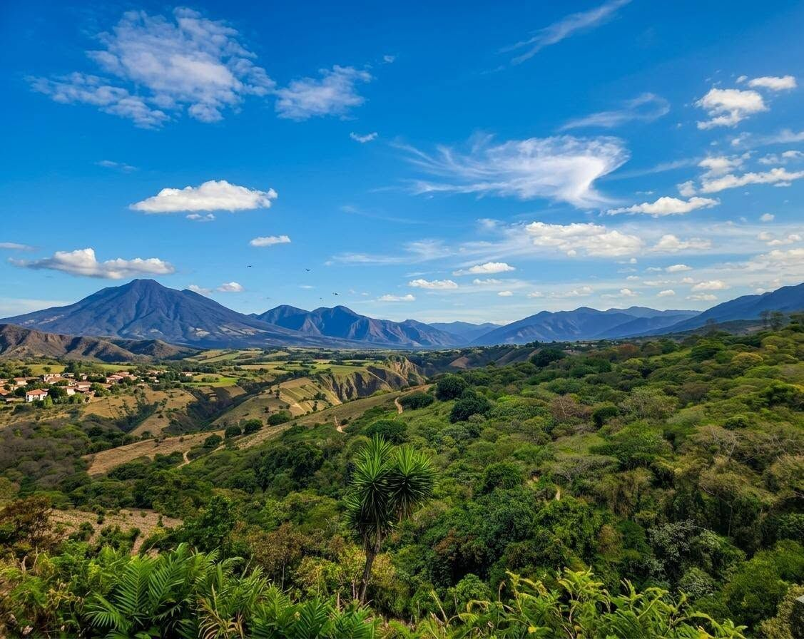
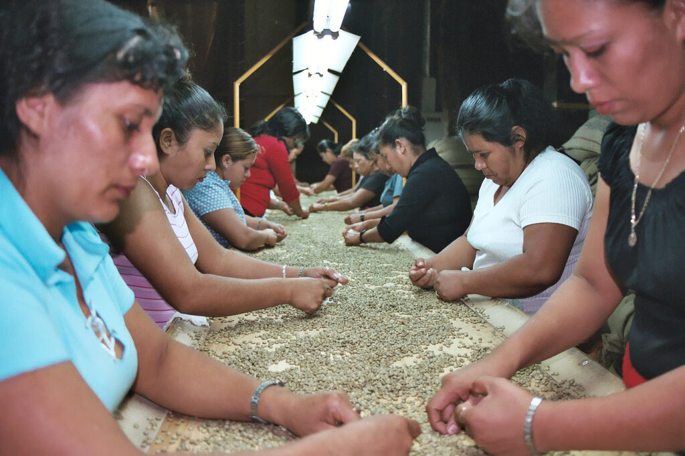

2014
Nace el proyecto
Primeros recorridos a pie por el centro de San Salvador y el volcán de San Salvador.

Somos una empresa salvadoreña dedicada a mostrar la belleza y la riqueza cultural de nuestro país. Con más de 10 años de experiencia, hemos ayudado a miles de viajeros a descubrir los secretos mejor guardados de El Salvador.
Foto: Pipil El Salvador, CC BY 4.0
Empezamos como un pequeño grupo de guías que querían enseñar su país con orgullo. Hoy diseñamos recorridos por playas, volcanes, pueblos coloniales y sitios arqueológicos, siempre de la mano de las comunidades que los cuidan.
Creemos que viajar es conocer a la gente: por eso cada ruta incluye cocina local, artesanos, productores de café y la historia que no aparece en los mapas.
Promover el turismo sostenible en El Salvador, destacando nuestras bellezas naturales, patrimonio cultural y la calidez de nuestra gente, creando experiencias únicas e inolvidables para cada visitante.
Ser la empresa líder en turismo de El Salvador, reconocida por la calidad de nuestros servicios y nuestro compromiso con el desarrollo sostenible del sector turístico nacional.


Cada etapa nos acercó a un rincón distinto del país.
Primeros recorridos a pie por el centro de San Salvador y el volcán de San Salvador.

Sumamos tours por Juayúa, Apaneca y Ataco con artesanos y cafetaleros locales.

Ascensos guiados al volcán de Santa Ana y al Izalco con guías certificados.

Alianzas con comunidades y guías locales para proteger El Imposible y sus alrededores.

Rutas culturales por Suchitoto, Joya de Cerén y Tazumal junto a historiadores.

Viajeros de todo el mundo han descubierto El Salvador con nosotros.
Toca una tarjeta para conocer mejor a cada integrante.
Prácticas responsables que protegen la naturaleza y benefician a las comunidades locales.
Tours que muestran la verdadera esencia de El Salvador, lejos del turismo masivo.
Adaptamos cada viaje a las necesidades y preferencias de cada viajero.
Trabajamos con los mejores proveedores locales para asegurar un servicio excelente.
Cuéntanos qué te gustaría vivir y armamos un viaje a tu medida.